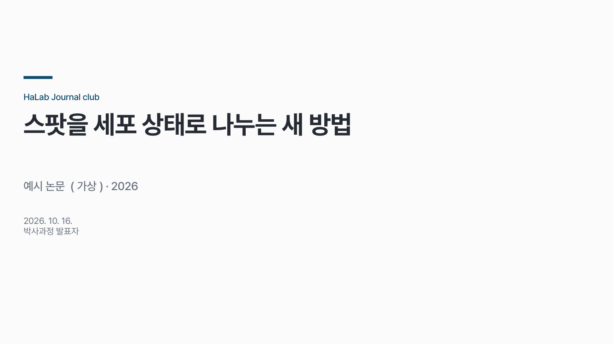
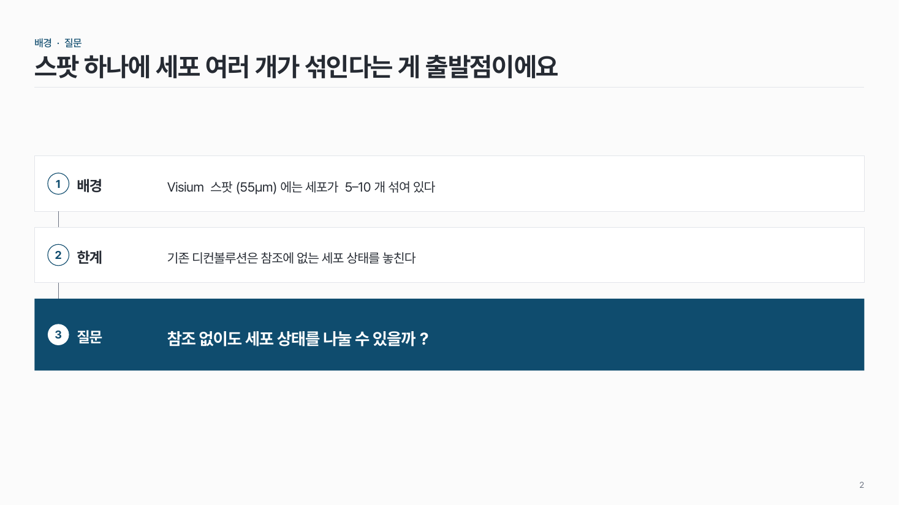
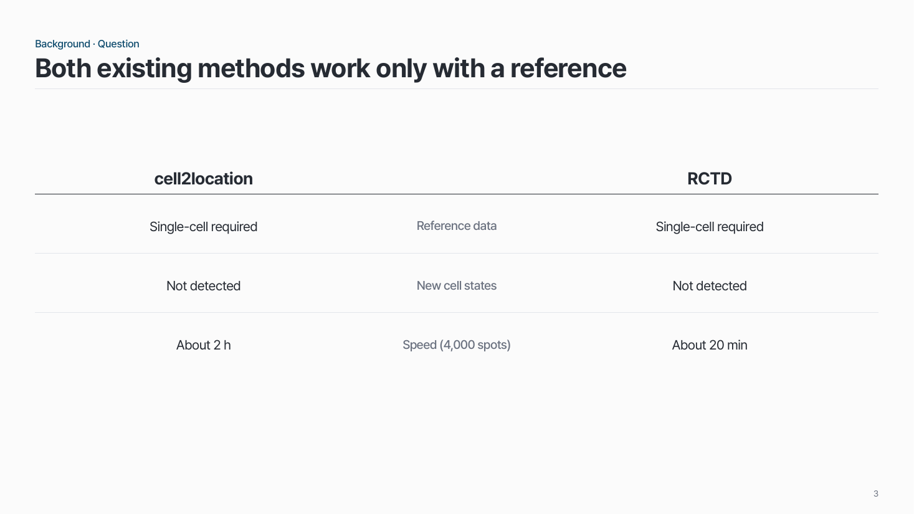
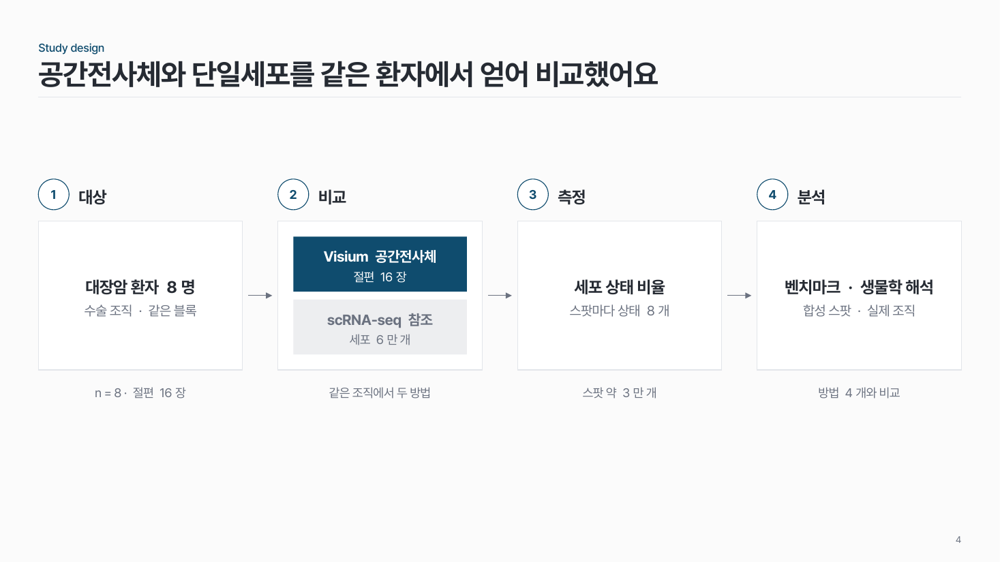
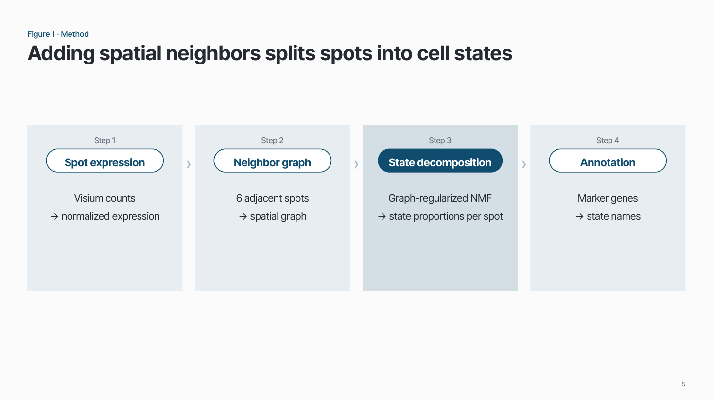
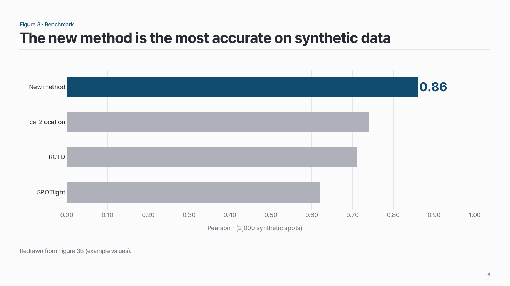
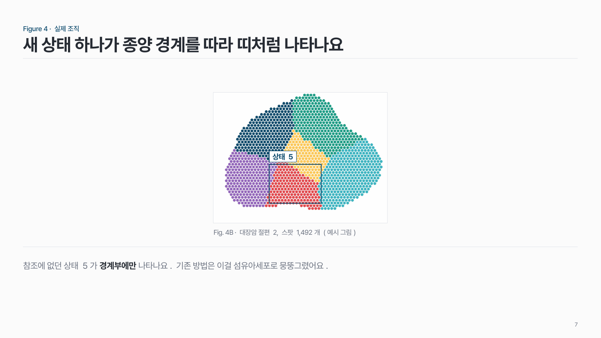
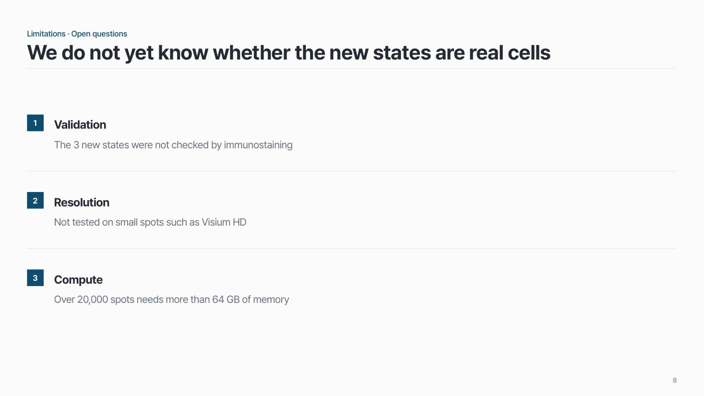
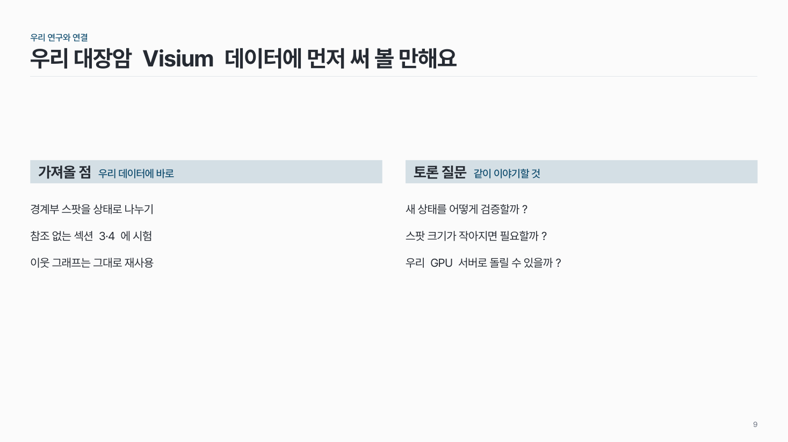

홈 › 자리별 덱 › Journal club
Journal club
논문 한 편을 모두가 같이 공부하는 시간이에요
한국어 30분 안팎 15–25장 매주
이런 자리
논문 결과를 소개하는 게 아니라 같이 공부하는 시간이에요. 새 분석 방법·알고리즘 논문, 여러 오믹스를 합친 논문을 주로 골라요.
- 흐름: 배경 · 질문 → Study design → 결과 + 방법 → 한계 · 열린 질문 → 우리 연구와 연결
- 결과 자체보다 figure 끼리 어떻게 이어지는지, 이야기 흐름에 집중해요.
팁
- 기본 개념은 선행 논문의 실제 figure 로 설명해요.
- 결과마다 그 결과를 낸 방법을 같이 보여 줘요. 방법만 따로 모아 두지 않아요.
- 논문 figure 는 통째로 붙이지 말고 필요한 패널만 크게, 봐야 할 곳 한 곳을 표시해요.
- 장 제목은 figure 번호가 아니라 그 figure 의 결론 문장 (✗ "Figure 2" → ✓ "공간 정보가 세포 상태를 더 잘 나눠요").
- 마지막에 토론 질문 2–3개를 남겨요.
덱 흐름
표지 → 배경 · 질문 → Study design → 결과 + 방법 → 한계 · 열린 질문 → 우리 연구와 연결
1
표지
논문 제목 · 저널 · 연도와 발표자.

2
배경 · 질문
기본 개념은 선행 논문의 실제 figure 로. 선행연구가 못 푼 것 → 이 논문의 질문.


3
Study design
질문에 답하려고 어떻게 설계했나 (보통 Figure 1A: 샘플, 데이터 종류, 조직 · 세포).

4
결과 + 방법
결과마다 그 결과를 낸 방법을 같이. 결과 자체보다 figure 끼리 어떻게 이어지는지.



5
한계 · 열린 질문
무엇이 아직 안 풀렸나.

6
우리 연구와 연결
내 연구에 가져올 점 + 토론 질문 2–3개.
